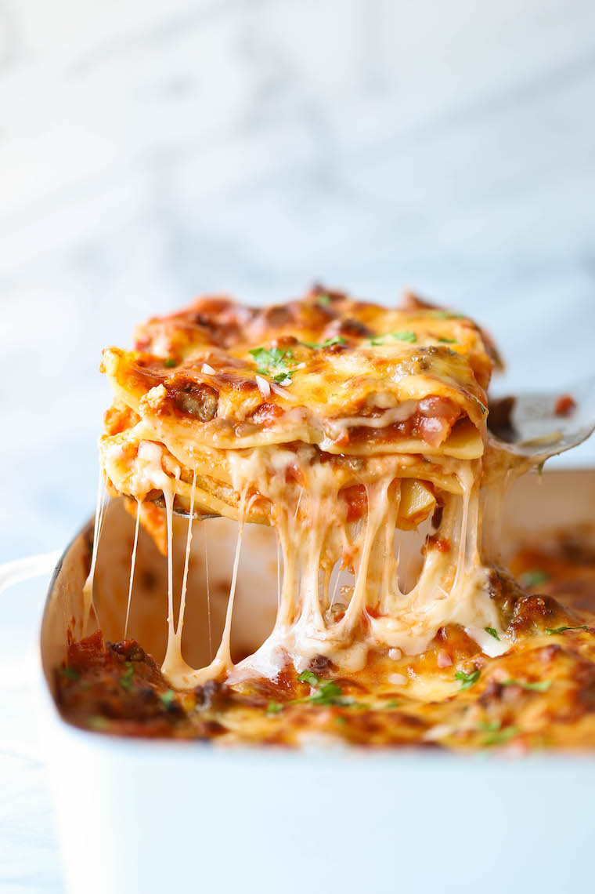

Lasagna

An image of this timeless Italian classic
Description
Everyone loves a good lasagna, right? It's a great way to feed a crowd and a perfect dish to bring to a potluck. It freezes well. It reheats well. Leftovers will keep you happy for days. Simply Recipes reader Alton Hoover sent me his favorite recipe for lasagna which he has been cooking since his college days. Alton's original recipe created enough lasagna for a small army so I halved it. What is posted here will easily serve eight people.
Ingredients
- 2 teaspoons extra virgin olive oil
- 2 teaspoons extra virgin olive oil
- 1 (14 ounce) can crushed tomatoes
- 1 tablespoon Italian seasoning
Steps
- Prepare the sauce
- Fry the minced meat
- Boil some pasta
- Mix it all together